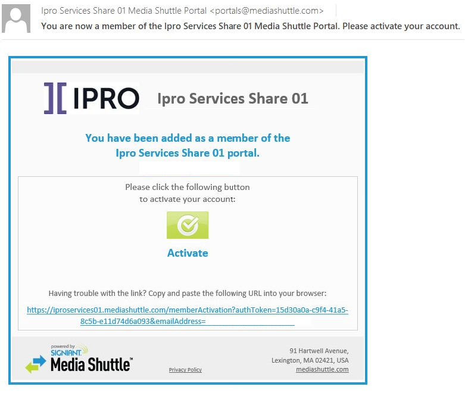
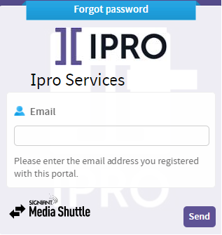
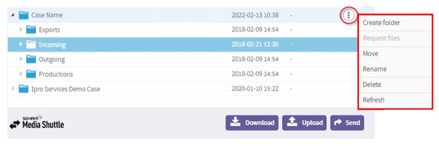
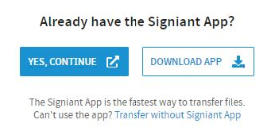
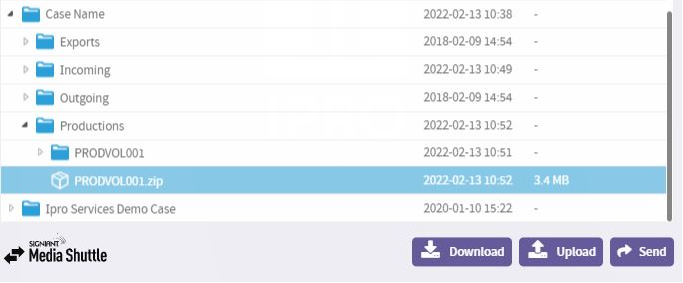
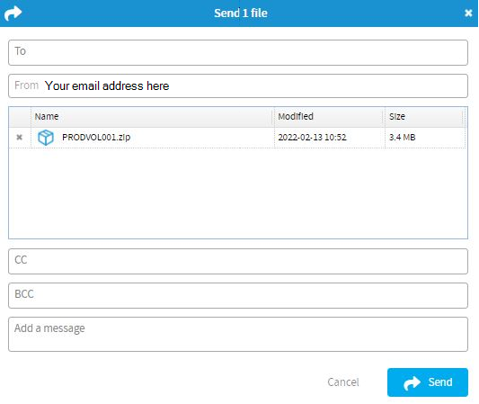

Follow the instructions to complete setting up your account.

The easiest, most reliable way you can send data for a case that’s hosted with IPRO Cloud Solutions is via Media Shuttle, powered by the Signiant App. This secure file transfer utility allows you to send any size file, anywhere, fast. You’ll never have to worry about shipping hard drives or breaking large files into smaller pieces again.
When the Cloud Solutions Group is notified that you’ve become a customer, you’ll receive an email from mediashuttle.com with instructions to activate your account.

Follow the instructions to complete setting up your account.
IPRO Cloud Solutions will provide you with the URL you can use to login to Media Shuttle. We suggest you bookmark this information to make it easier to find and login to Media Shuttle.
For IPRO Cloud Solutions customers in the US, it will begin like this - https://iproservices
For IPRO Cloud Solutions customers in Canada, it will begin like this - https://iproservicesca
Log in to Media Shuttle using the appropriate URL and user credentials set up during Activation.
|
|
Note: If you forget your Media Shuttle password, just go to the URL as if you are logging in and click on Forgot Password? You’ll be presented with a form to request a password reset.
 |
Once logged in, you’ll see a list of the Case folders you have access to.
For single-tenant installations, where you maintain your own cloud environment, when you log in you will see a list of your file share and client data folders.
For multi-tenant configurations, where the IPRO Cloud Solutions team maintains your environment, when you log in you will see a list of the Case folders that you have access to.
Each Case folder contains four sub-folders:
Incoming – this folder is used to upload new data to IPRO
Outgoing – this folder is used when IPRO wants to deliver files to you other than non-production data exports or productions.
Productions – this folder is used when documents are produced from a case
To access Folder Options, select at the far right.

When you’re ready to send data to IPRO Cloud Solutions, log in to Media Shuttle.
Navigate to the correct Case Folder.
Select the Incoming folder, then click .
You can use Drag and Drop to add files for upload or click the Add Files button to browse and select files.
Once files are selected, click the Upload button to begin the file transfer. You’ll see a Transfer Status screen and it will indicate Done when the transfer is complete. Additionally, you’ll receive an email from mediashuttle.com confirming the file transfer is complete.
|
|
IMPORTANT:: Upon your first Upload, you’ll be prompted to Install the Signiant App. Although you can upload data without using the Signiant App, it is strongly advised that you use it to greatly increase upload and download speeds. 
|
When you’re ready to download data from IPRO Cloud Solutions, login to Media Shuttle.
Navigate to the correct Case Folder and select sub-folder or file(s) to be downloaded.

Click the Download button.
You’ll be prompted for a location to download the files to.
You can use the Send feature to securely send files to others who do not have access to Media Shuttle. This is particularly useful when you’d like to serve production files to Opposing Counsel or send exported files to Co-Counsel or an Expert Witness.
When you’re ready to Send data, log in to Media Shuttle.
Navigate to the correct Case Folder and select the data set you want to send.
Fill in the email address(es) for the recipients, CC, or BCC fields. Add your own message to be included, then click the Send button.

The recipient(s) will receive an email from mediashuttle.com indicating that you have shared a download link to them.
|
|
Note: Media Shuttle Send links expire after 30 days. You can always re-Send a data set if the link has expired. |